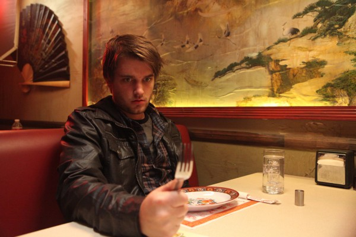

#8426 Hatchet 4 - Victor Crowley
Alternativ: Victor Crowley


 IMDB-Wertung: 5.6 / 10
IMDB-Wertung: 5.6 / 10  Metascore: 0
Metascore: 0 
Zehn Jahre ist der legendäre Axtmörder Victor Crowley nun schon tot, so glaubt man. Andrew, der einzige, der das grausame Massaker von damals überlebte, hat ein Buch über seine schrecklichen Erlebnisse geschrieben. Viele glauben aber dass nicht Victor Crowley all die Menschen abgeschlachtet hat, sondern Andrew selbst. Um nun seinem Buch zum Erfolg zu verhelfen, will seine Verlegerin eine Show direkt aus den Sümpfen senden. Andrew wollte aber nie wieder an den Ort des Geschehens zurück. Und das mit Recht. Denn kaum angekommen, geht das blutige Gemetzel von vorne los.
Jahr: 2017
Dauer: 82 Minuten
FSK: 18
Land: USA Studio: ArieScope PicturesTonspuren: DTS - ,
Untertitel: Deutsch,
Auflösung: 1080p (1920x800) Größe: 6246 MB
Genre: Horror, Komödie
Regisseur: Adam Green
Drehbuch: Adam Green
Soundtrack: Jason Akers, Sam Ewing
Darsteller:
 Parry Shen als Andrew
Parry Shen als Andrew Kane Hodder als Victor Crowley
Kane Hodder als Victor Crowley Laura Ortiz als Rose
Laura Ortiz als Rose Dave Sheridan als Dillon
Dave Sheridan als Dillon- Krystal Joy Brown als Sabrina
- Brian Quinn als Austin
- Felissa Rose als Kathleen
-  Chase Williamson als Alex
- Katie Booth als Chloe
- Tiffany Shepis als Casey
- Jonah Ray als Del
- Kelly Vrooman als Sue
 Tyler Mane als Bernard
Tyler Mane als Bernard- Blake Woodruff als Zach
- Whit Spurgeon als Linus
- David Foy als Skip
- Kali Cook als Kristina
- Eileen Abarrca als Camille Parker
- Arwen Green als Herself
- Joe Lynch als Pilot Mathew Waters
 Tony Todd als Rev. Zombie
Tony Todd als Rev. Zombie- Tezz Yancey als Jay
- Sarah Elbert als Charlene
Datei: X:\FSK18-Collections\Hatchet\Hatchet 4 - Victor Crowley (2017, FSK18, 1920x800).mkv seit 02.03.2018
Festplatte: FSK18
 Es gibt insgesamt 7 Filme in der Gruppe 'FSK18-Collections\Hatchet'
Es gibt insgesamt 7 Filme in der Gruppe 'FSK18-Collections\Hatchet'